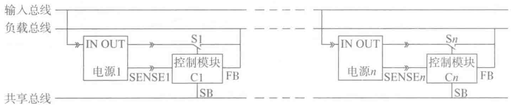
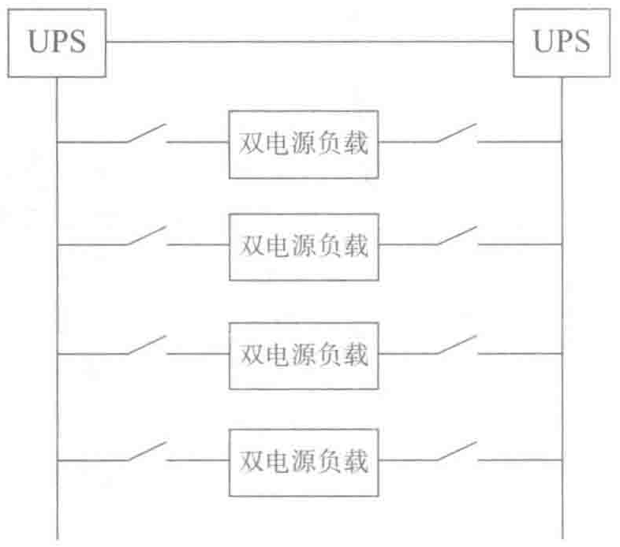

法和服务器的双电源结构进行匹配。所以，2N/2(N+1)的供电结构正是基于服务器冗余电源结构而兴起的供电解决方案，如图2-16所示。


从上图中可以看出，双电源服务器负载从不同的UPS得到两路独立输入电源，然后服务器内的两个电源同时工作均分负载，输出12V以及5V等电压给主板和相关部件供电，主板上还有一级VRM电源再将12V输入，进一步降压到1.3V等电压给CPU以及周边芯片供电。
这种供电模式的优点是有冗余备份、可靠性高，但服务器供电能效降低。
3）服务器电源的能效
通常数据中心的能效指标（如PUE值）是不考虑电子信息设备内电源损耗的。同时服务器电源环节的节能受制于服务器设备厂商，普通用户无法定制服务器，造成电源效率指标通常较低。
随着近年来业界对服务器电源能效的关注度逐渐提高，更多的数据中心按照SPUE（Server PUE，即真正用于设备供电末端有效的能源利用指标）来反映供电的绿色节能水平。同时，“能源之星”标准在不断升级。目前规范中规定，使用内置电源的计算机在50%负载条件下工作效率最低达85%，而在20%和100%负载条件下最低效率达到82%。
4）节能电源的标准
通常标准的节能电源，必须同时满足以下三个要求：
- 典型负载下的转换效率达到80%：所谓典型负载，是指电源的负载达到额定功率的50%，比如额定功率300W的电源，其典型负载为300W×50%=150W。节能电源在50%的负载状态下，转换效率必须达到85%。
- 待机功率低于1W：待机功率指的是电脑在关机状态下的负载功率。电脑在关机后，只要电源插线板的电路不断开，电源就会给主板提供一个+5V的待机电压。电脑开机、网络唤醒、键盘开机都与+5V有关。通常情况下，+5V上有微弱的电流，有电流就会有功率消耗。节能电源是指在+5V电压上的电流在0.1A时，整个电源输入端的功率不应该超过1W，即此时电源的转换效率应该高于50%。